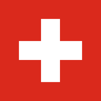
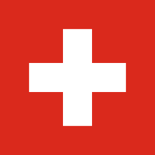
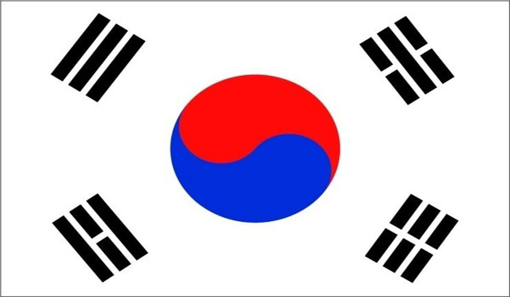
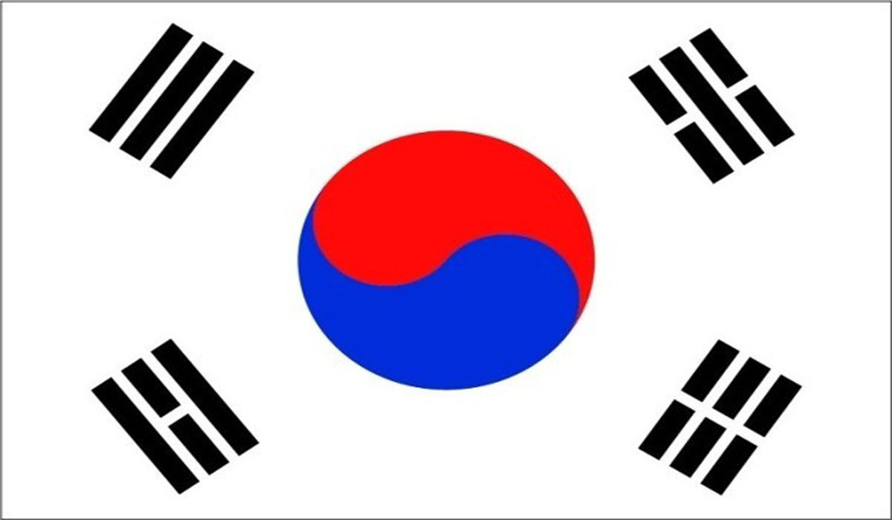

| Turquia |
Participou de 5 Copas |
Nenhuma |
Jalel Kadri |
Dkhili, Hassen, Dräger, Abdi, Rekik, Lamin, Talbi, Rafia, Ben Slimane, Laïdouni, Mejbri, Jaziri, Jebali, Tounekti |
Grupo E    |
| Seleção |
Quantas Copas Já jogou |
Premiações Alcançadas Na Copa do Mundo |
Nome do Técnico |
Principais Jogadores |
| Espanha |
15 Copas do Mundo |
1 Titulos de Campeao |
Luis Enrique Martínez García |
De Gea, Sanchez, Simom, Azpilicueta, Torres, Martinez, Garcia, Gaya, Carvajal, Alba, Laporte, Basquets, Gavi, Koke, Carlos Soler, Rodri, Fornals, Olmo, Mikel Merino, Morata, Rodrigo, Yeremi Pino, Brahim Diaz, Pablo Sarabia, Raul de Tomas |
| Alemanha |
17 Copas do Mundo |
4 Titulos de Campeao |
Hans-Dieter Flick |
Neuer, Leno, Trapp, ter Stegen, Ginter, Gunter, Hofmann, Kehrer, Raum, Rudiger, Schlotterbeck, Sule, Adeyemi, Brandt, Draxler, Gnbry, Goretzke, Gundogan, Havertz, Kimmich, Muller, Musiala, Neuhaus, Nmecha, Reus, Sane, Wirtz |
| Japao |
6 Copas do mundo |
0 Copas do Mundo Conquistadas |
Hajime Moriyasu |
Eiji Kawashima, Shuichi Gonda, Daniel Schmidt, Naomichi Ueda, Shogo Taniguchi, Ko Itakura, Yuto Nagatomo, Shinnosuke Nakatani, Hiroki Sakai, Yuta Nakayama, Miki Yamene, Wataru Endo, Gaku Shibasaki, Genki Haraguchi, Takumi Minamino, Takefusa Kubo, Hidemasa Morita, Junya Ito, Ao Tanaka, Ritsu Doan, Daizer Maeda, Yuya Osako, Takuma Asano |
Grupo F   |
| Seleção |
Quantas Copas Já jogou |
Premiações Alcançadas Na Copa do Mundo |
Nome do Técnico |
Principais Jogadores |
| Belgica |
6 Copas do Mundo |
0 Copas do Mundo Conquistadas |
Roberto Martínez |
Courois, Mignolet, Sels, Casteels, Alderweireld, Boyata, Denayer, Dendoncker, Faes, Theate, Vertonghen, Castagner, Meunier, Carrasco, Thorgan Hazard, Saelemaekers, De Bruyne, Praet, Lokonga, Tielemans, Vanaken, Witsel, De Ketelaere, Eden Hazard, Mertens, Trossard |
| Canada |
Participou de 2 Copas do Mundo |
0 Copas do Mundo Conquistadas |
John Herdman |
Crepeau, Leutwiler, St. Clair, Henry, Johnston, Kennedy, Laryea, Miler, Steven Vitoria, Eustaquio, Fraser, Davies, Kaye, Osorio, Paton, Piette, Akinola, Buchanan, Cavallini, Corbeanu, Hoilett, Larin, Pasher |
| Marrocos |
Participou de 5 Copas do Mundo |
0 Copas do Mundo Conquistadas |
Vahid Halilhodžić |
Munir Mohamedi, Bono, Zniti, Saiss, Hakimi, Aguerd, Masina, Chakla, El Ymiq, Lazaar, Taarabt, Amarabat, Jabrane, Amallah, Barkok, Labyad, Chair, Ziyech, En-Nesri, El Kaabi, Rahimi, Aboukhlal, Munir El Haddadi |
| Croacia |
Participou de 5 Copas do Mundo |
0 Copas do Mundo Conquistadas |
Zlatko Dalić |
Livakovic, Sluga, Ivusic, Vida, Lovren, Barisc, Caleta-Car, Juranovic, Uremovic, Gvardiol, Skoric, Sosa, Modric, Kovacic, Brozovic, Pasalic, Vlasic, Ivanusec, Moro, Perisc, Kramarik, Orsic, Budimir, Livaja, Colak |
Grupo G     |
| Seleção |
Quantas Copas Já jogou |
Premiações Alcançadas Na Copa do Mundo |
Nome do Técnico |
Principais Jogadores |
Brasil |
participou de 19 Copas Do Mundo |
5 Titulos de Campeao |
Tite |
Alisson; Danilo, Marquinhos, Thiago Silva e Alexsandro; Casemiro, Fred e Paquetá; Raphinha, Vinicius Júnior e Neymar |
| Camarões |
7 Copas do Mundo |
0 Copas do Mundo Conquistadas |
Rigobert Song |
Ondoa, Andre Onana, Nna Noukeu, Oyongo, Ngadeu-Ngadji, Fai, Dawa, Leuko, Onguene, Moukoudi, Ngouyamsa, Anguissa, Nagmaleu, Kunde, Eteki, Gouet, Ndenge, Jean Onana, Toko Ekambi, Ganago, Nsame, Evina, Oling |
| Servia |
Participou de 12 Copas do Mundo |
0 Copas do mundo Conquistadas |
Dragan Stojkovic |
Rajkovic, Nikolic, IIic, Mistrovic, Spajic, Ristic, Palvic, Petkovic, Terzic, Cestic, Gudelj, Vulic, Gavric, Ivan IIic, Makaric, Joveljic, Jovic. |
| Suiça |
Participou de 7 Copas do Mundo |
0 Copas do Mundo Conquistadas |
Vladimir Petkovic |
Sommer, Omlin, Kobel. Akanji, Comert, Elvedi, Garcia, Mbadu, Rodriguez, Schar, Widmer, Aebischer, Ajeti, Fassnacht, Freuler, Shaqiri, Sow, Steffen, Vargas, Zakaria, Zuber, Embolo, Gavranovic, Itten |
Grupo H      |
| Seleção |
Quantas Copas Já jogou |
Premiações Alcançadas Na Copa do Mundo |
Nome do Técnico |
Principais Jogadores |
| Portugal |
7 Copas do Mundo |
0 Copas do Mundo Conquistadas |
Fernando Santos |
Patricio, Lopes, Costa, Cancelo, Dalot, Mendes, Guerreiro, Duarte, Pepe, Dias, Danilo Pereira, Palhinha, Matheus Nunes, Carvalho, Neves, Fernandes, Joao Mario, Moutinho, Bernardo Silva, Andre Silva, Ronaldo, Jota, Guedes, Rafa Silva |
| Gana |
3 Copas do Mundo |
0 Copas do Mundo Conquistadas |
Franky Vercauteren |
Abalora, Danlad, Antwi, Baba Rahman, Opoku, Anang, Abdul-Ganiyu, Imoro, Adjei, Andre Ayew, Wakaso, Thomas, Kudus, Blay, Esso, Awako, Bukari, Poku, Jordan Ayew, Boateng, Wriedt, Gyasi, Ekuban |
| Uruguai |
13 Copas do Mundo |
2 Copas do Mundo Conquistadas |
Diego Alonso |
Campana, Muslera, Sosa, De Amores, Godin, Gimenez, Coates, Damian Suarez, Oliveira, Vina, Valverde, Torreira, Bentancur, Arambarri, Vecino, De La Cruz, De Arrascaeta, Maxi Gomez, Facundo Torres, Darwin Nunez, Facundo Pellistri, Diego Rossi, Cavani, Luis Suarez |
| Coreia Do Sul |
10 Copas do Mundo |
0 Copas do Mundo Conquistadas |
Paulo Jorge Gomes Bento |
Ji-Su Park, Kim Tae-Hwan, Kim Min-Jae, Kim Young-Gwon, Kim Jin-Su, Kwon Kyung-Won, Jonggy Yoon, Pak Ming-yu, Jae-Ik Lee, Lee Jae-Sung, Ko Seung-Beom, Na Sang-Ho, Song Min-Kyu, Son Heung-Min, Hwang Hee-Chan, Young-Wook Cho, Gyu-Seong Jo |